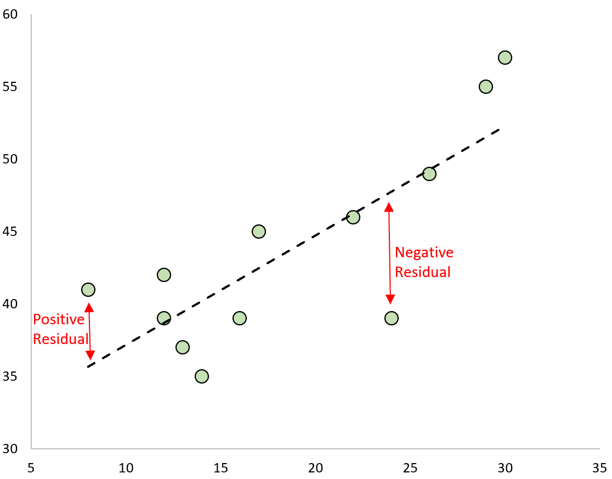
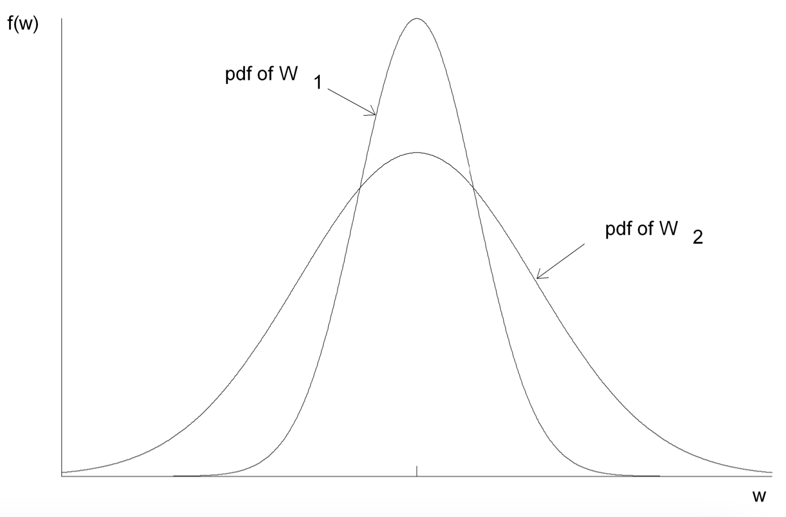
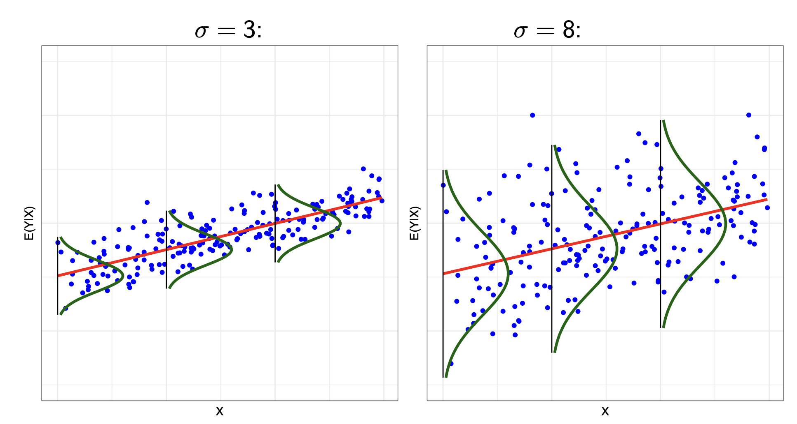

This lesson covers the following topics:
- Some simple properties of our best-fit line through OLS estimation.
- The conditions on which OLS estimation is an unbiased estimator (Gauss-Markov conditions), and how violations of these conditions will lead to biased estimates.
- How we can conduct hypothesis testing on OLS estimates, and the different assumptions needed for that.
1.5.1: Algebraic Properties of OLS
Once we have our OLS estimates \hat\beta_0 and \hat\beta_1 (explained in 1.4.4), we can obtain both our fitted values, and the OLS residuals \hat u_i:
\begin{split} \hat u_i & = y_i - \hat y_i \\ & = y_i - \hat\beta_0 - \hat\beta_1 x_i \end{split}
Important note, the residual \hat u_i is different from the error u_i:
\begin{split} & u_i = y_i - \beta_0 - \beta_1 x_i \\ & \hat u_i = y_i - \hat\beta_0 - \hat\beta_1 x_i \end{split}
The figure below shows what a residual for a point looks like: the distance between the best fit line.

Recall that the OLS estimates \hat\beta_0 and \hat\beta_1 are chosen to satisfy the following first order conditions (see 1.4.4):
\begin{split} & \sum\limits_{i=1}^n (y_i - \hat{\beta}_0 - \hat{\beta}_1 x_i) = 0 \\ & \sum\limits_{i=1}^n x_i (y_i - \hat{\beta}_0 - \hat{\beta}_1 x_i) = 0 \end{split}
We can plug in \hat u_i = y_i - \hat\beta_0 - \hat\beta_1 x_i into the two conditions above to get:
\begin{split} & \sum\limits_{i=1}^n \hat u_i = 0 \\ & \sum\limits_{i=1}^n x_i \hat u_i = 0 \end{split}
Property 1: Sum of Residuals is 0
OLS residuals always add up to zero, since:
\sum\limits_{i=1}^n (y_i - \hat{\beta}_0 - \hat{\beta}_1 x_i) = \sum\limits_{i=1}^n \hat u_i = 0
- This property ensures that the average value of y_i in our data is the same as the average value of our predictions \hat y_i.
Property 2: No Covariance Between x and Residual.
Using the first order conditions of OLS, and the definition of \hat u_i from above, we know the following to be true:
\sum\limits_{i=1}^n (y_i - \hat{\beta}_0 - \hat{\beta}_1 x_i) = \sum\limits_{i=1}^n \hat u_i = 0
Which also means that \bar{\hat u_i} = 0 (since an average is just the sum divided by the number of observations, and the sum is equal to 0).
We also know that:
\sum\limits_{i=1}^n x_i (y_i - \hat{\beta}_0 - \hat{\beta}_1 x_i) = \sum\limits_{i=1}^n x_i \hat u_i = 0
Now, recall the formula for covariance discussed in 1.3.4:
Cov(x,y) = \frac{1}{n}\sum\limits_{i=1}^n [(x_i - \bar x)(y_i - \bar y)] \\
Thus, the covariance between x and \hat u is (by expanding, then recalling the properties discussed above):
\begin{split} cov(x, \hat u) & = \frac{1}{n}\sum\limits_{i=1}^n [(x_i - \bar x)(\hat u_i - \bar{\hat u})] \\ & = \frac{1}{n}\sum\limits_{i=1}^n(x_i \hat u_i - x_i \bar{\hat u} - \bar x \hat u_i + \bar x \bar {\hat u}) \\ & = \frac{1}{n} \left( \sum\limits_{i=1}^nx_i \hat u_i - \sum\limits_{i=1}^n x_i\bar{\hat u} - \sum\limits_{i=1}^n \bar x \hat u_i + \sum\limits_{i=1}^n\bar x \bar{\hat u} \right) \\ & = \frac{1}{n} \left( \sum\limits_{i=1}^nx_i \hat u_i - \sum\limits_{i=1}^n x_i\bar{\hat u} - \bar x\sum\limits_{i=1}^n \hat u_i + \sum\limits_{i=1}^n\bar x \bar{\hat u} \right) \\ & = \frac{1}{n}(0 -0-\bar x(0) + 0) \\ & = 0 \end{split}
Thus, the covariance (and thus correlation) between x and \hat u must be zero.
Property 3: Regression Line Passes Through Means
Remember our solution for \hat\beta_0 in OLS was \hat\beta_0 = \bar{y} - \hat{\beta}_1 \bar{x}. Rearranging this equation, we get:
\begin{split} \hat\beta_0 & = \bar{y} - \hat{\beta}_1 \bar{x} \\ \hat\beta_0 + \hat\beta_1 \bar x & = \bar y \\ \bar y & = \hat\beta_0 + \hat\beta_1 \bar x \end{split}
Thus, the OLS estimated best-fit line always passes though point (\bar x, \bar y) (the means of our data).
1.5.2: Unbiasedness of OLS Under the Gauss-Markov Theorem
An unbiased estimator, if we recall from 1.2.8, means that over many different estimates, the expected value of all the estimates is the true parameter value: E(\hat{\theta}_n) = \theta.
Unbiasedness is desirable property of causal estimators. Is OLS Unbiased? The Gauss-Markov Theorem proves that OLS is unbiased when 4 conditions are met.
The Gauss-Markov Theorem states that under 4 conditions, the OLS estimator is an unbiased estimator for \beta_1.
- SLR.1 (Linearity in Parameters): The parameters of the model are linear.
- SLR.2 (Random Sampling): All observations in our sample are randomly sampled from the population.
- SLR.3 (Sample Variation in x): The sample values of x must have a non-zero variance.
- SLR.4 (Zero Conditional Mean). The error term u has an expectation of 0, given any value of x.
We will explore each condition in detail.
This section will be focused on the conditions. The next section will prove the unbiasedness of OLS under these conditions.
Assumption SLR.1: Linearity
Assumption SLR.1 states that a model must be linear in parameters.
This means that the parameters of the model \beta_0 and \beta_1 must not be multiplied together - they must be added together.
For example, the following is linear:
y = \beta_0 + \beta_1 x
While the following is not linear (since parameters are multiplied):
y = \beta_0\beta_1x
Note: This does not mean that the actual regression line must be linear - only the parameters/coefficients must not be multiplied, the variables can be. For example, the following model is still linear in parameters:
y = \beta_0 + \beta_1 x^2
Assumption SLR.2: Random Sampling
All observations in our sample are randomly sampled from the population.
To meet this condition, two criteria must be met:
- Observations i must be independent of each other - i.e. if you get y_1, that does not affect your chances of getting y_2.
- All observations i must come from the same population.
This assumption allows us to go from:
y = \beta_0 + \beta_1 x + u
To the equation with indexes i:
y_i = \beta_0 + \beta_1 x_i + u_i
Assumption SLR.3: Sample Variation in x
Recall that our \hat\beta_1 solution of OLS is:
\hat{\beta}_1 = \frac{Cov(x, y)}{Var(x)}
This tells us that for \hat\beta_1 to exist, Var(x) ≠ 0.
- Since we cannot divide by 0, so Var(x) = 0 would not produce any \hat\beta_1 estimate.
This is the only assumption that must be met in order to calculate OLS estimates (however, the other assumptions will be needed for the unbiasedness of OLS).
Assumption SLR.4: Zero-Conditional Mean
In the population, the error term u must have an expecation of 0, given all values of x. Mathematically:
E(u|x) = 0 \text{ for all } x
This also implies that the error term u an x are uncorrelated with each other.
- This is because if u was correlated with x, it would not always be equal to 0 no matter the value of x.
Since the correlation is 0, the covariance between u and x must also be 0:
Cov(x,u) = 0
This alternative statement relating to correlation/covariance is called exogeneity.
- If this assumption is violated (where x is correlated with error u), then we have endogeneity, and x is considered an endogeneous regressor.
- We will discuss endogeneity in more detail in lesson 1.7.
This is the most frequently violated of assumptions, yet arguable the most important of assumptions to ensure OLS is unbiased.
- We will mathematically show this in the next lesson.
- Because it is so frequently violated, we will need to introduce further methods beyond simple linear regression for accurate estimation.
1.5.3: Proof of Unbiasedness of OLS under Gauss-Markov
In the last section, we covered the Gauss-Markov assumptions, and how when they are met, OLS is unbiased.
In this section, we will use those assumptions to prove the unbiasedness of OLS.
- Or in other words, we want to show E(\beta_1) = \beta_1
Before we start, here are a few key properties of summation
\begin{split}& \sum\limits_{i=1}^n (x_i - \bar{x}) = 0 \\& \sum\limits_{i=1}^n x_i(y_i - \bar{y}) = \sum\limits_{i=1}^n(x_i - \bar{x}) (y_i - \bar{y}) \\& \sum\limits_{i=1}^n x_i(x_i - \bar{x}) = \sum\limits_{i=1}^n(x_i - \bar{x})^2\end{split}
We want to show E(\beta_1) = \beta_1. Let us start off with the OLS estimator (which we derived in 1.4.4):
\hat{\beta}_1 = \frac{\sum_{i=1}^n (x_i - \bar{x})(y_i - \bar{y})}{\sum_{i=1}^n(x_i - \bar{x})^2}
The existence of \hat{\beta}_1 is guaranteed by condition 2 from above, since the denominator is equal to Var(x), so that must not be 0.
Thus, this Gauss-Markov condition must be met.
Let us look at the numerator. Let us expand the numerator:
\begin{split} & \sum\limits_{i=1}^n (x_i - \bar{x})(y_i - \bar{y}) \\ = & \sum\limits_{i=1}^n [(x_i - \bar x)y_i - (x_i - \bar x) \bar y] \\ = & \sum\limits_{i=1}^n(x_i - \bar x)y_i - \sum\limits_{i=1}^n (x_i - \bar x) \bar y \\ = & \sum\limits_{i=1}^n(x_i - \bar x)y_i - \bar y\sum\limits_{i=1}^n (x_i - \bar x) \\ \end{split}
We know that \sum (x_i - \bar x) = 0. Thus, we can further simplify to:
\begin{split} = & \sum\limits_{i=1}^n(x_i - \bar x)y_i - \bar y\sum\limits_{i=1}^n (x_i - \bar x) \\ = & \sum\limits_{i=1}^n(x_i - \bar x)y_i - \bar y(0) \\ = & \sum\limits_{i=1}^n(x_i - \bar x)y_i \end{split}
Thus, putting the numerator back in, we now we have the equation:
\hat{\beta}_1 = \frac{\sum_{i=1}^n (x_i - \bar{x})y_i}{\sum_{i=1}^n(x_i - \bar{x})^2}
Now, let us play with the numerator more (note the properties of summation introduced earlier):
\begin{split} & = \sum\limits_{i=1}^n (x_i - \bar{x})y_i \\ & = \sum\limits_{i=1}^n(x_i - \bar{x})(\beta_0 + \beta_1 x_i + u_i) \\ & = \sum\limits_{i=1}^n(x_i - \bar{x}) \beta_0 + \sum\limits_{i=1}^n(x_i - \bar{x}) \beta_1 x_i + \sum\limits_{i=1}^n (x_i - \bar{x}) u_i \\ & = \beta_0 \sum\limits_{i=1}^n(x_i - \bar{x}) + \beta_1 \sum\limits_{i=1}^n(x_i - \bar{x}) x_i + \sum\limits_{i=1}^n (x_i - \bar{x}) u_i \\ & = 0 + \beta_1 \sum\limits_{i=1}^n(x_i - \bar{x})^2 + \sum\limits_{i=1}^n(x_i - \bar{x})u_i\end{split}
Now, putting the numerator back into the equation, we simplify:
\begin{split} \hat{\beta}_1 & = \frac{\beta_1 \sum_{i=1}^n(x_i - \bar{x})^2 + \sum_{i=1}^n(x_i - \bar{x})u_i}{\sum_{i=1}^n(x_i - \bar{x})^2} \\ & = \beta_1 + \frac{\sum_{i=1}^n(x_i - \bar{x}) u_i}{\sum_{i=1}^n (x_i - \bar{x})^2} \\ & = \beta_1 + \sum\limits_{i=1}^n w_i u_i \end{split}
Where w_i = \frac{x_i - \bar{x}}{\sum (x_i - \bar{x})^2}, which is a function of random variable x.
- We could also write w_i as \frac{x_i - \bar{x}}{SST_x} (where SST_x is total sum of squares for x).
Since w_i is a function of x, that means \hat\beta_1 is also a function of x (depends on the value of x).
Now we need to find the expectation E(\hat\beta_1). Thus, we have this equation:
\begin{split} E(\hat\beta_1|x) & = E \left( \beta_1 + \sum\limits_{i=1}^n w_i u_i \bigg| x \right) \\ & = \beta_1 + \sum\limits_{i=1}^nE(w_iu_i|x) \end{split}
But what does \sum E(w_iu_i |x) equal? This is where our other two Gauss-Markov Conditions come into play.
The Zero-Conditional Mean assumption says E(u|x) = 0.
Random Sampling allows us to put subscripts i on all our equations. In our example, we said that random sampling allows us to go from y = \beta_0 + \beta_1 x + u to y_i = \beta_0 + \beta_1 x_i + u_i.
Similarly, it allows us to take the Zero Conditional Mean E(u|x) to E(u_i | x_i) and E(u_i | x).
Thus, with these two assumptions, we know that:
E(u|x) = E(u_i | x_i) = E(u_i|x) = 0
This means that:
E(w_i u_i|X) = w_i E(u_i|x) = 0
- This is only true when both Zero-Conditional Mean and Random Sampling are true.
Now knowing what E(w_iu_i|x) is, let us plug it back into our equation:
\begin{split} E(\hat\beta_1|x) & = \beta_1 + \sum\limits_{i=1}^nE(w_iu_i|x) \\ & = \beta_1 + \sum\limits_{i=1}^n0 \\ & = \beta_1 \end{split}
However, we have solved for E(\hat\beta_1 |x), and not E (\hat\beta_1).
This is where the Law of Iterated Expectation. The law says the following:
E(x) = E[E(x|y)]
Thus, we can use this to conclude the proof:
\begin{split} E(\hat\beta_1) & = E[E(\hat\beta_1|x)] \\ & = E(\beta_1) \\ & = \beta_1 \end{split}
- Since \beta_1 is the true value (a constant), its expectation is itself
Thus, E(\hat\beta_1) = \beta_1, proving the unbiasedness of OLS under the Gauss-Markov conditions.
The key assumption is Zero conditional mean (SLR.4). What causes this final assumption, zero conditional mean E(u|x) = 0, to be violated?
- Omitted Variable Bias. This is because if we have any other variable correlated with y and x in the error term u_i, E(u|x) will be violated. (we will discuss this more in lesson 1.7)
- Measurement Error in our variables (this is discussed in part III of the course).
- Sample Selection is not random.
- Simultaneity, when x has an effect on y and y has an effect on x.
What can we do to remedy this assumption so OLS is not biased?
- Add control variables with multiple linear regression (discussed in lesson 1.6 and 1.7)
- Use instrumental variables estimation to address the entire problem (discussed in lesson 1.11).
1.5.4: Variance of the OLS Estimator and Homoscedasticity
We have proved that OLS is unbiased under 4 conditions.
However, if we recall from 1.2.8, unbiasedness is not the only thing we care about in an estimator. We also care about the estimator’s variance.
For example, in the figure below, we have two unbiased estimators centred on the same real parameter value. However, the second estimator w_2 is far more varied than the first estimator w_1. That means while both are unbiased, the estimator w_2 often produces specific sample estimates that are farther from the true parameter value.

Luckily, the Gauss-Markov Theorem does not stop at unbiasedness. With an additional condition (homoscedasticity), we can determine that OLS is not only unbiased, but the linear estimator with the least variance:
The Gauss-Markov Theorem states that under 4 conditions, the OLS estimator is the Best Linear Unbiased Estimator (BLUE) for \beta_1, being the unbiased linear estimator with the least variance.
- SLR.1 (Linearity in Parameters): The parameters of the model are linear.
- SLR.2 (Random Sampling): All observations in our sample are randomly sampled from the population.
- SLR.3 (Sample Variation in x): The sample values of x must have a non-zero variance.
- SLR.4 (Zero Conditional Mean). The error term u has an expectation of 0, given any value of x.
- SLR.5 (Homoscedasticity): The error term has the same variance given any value of x.
But what does this new condition of homoscedasticity mean?
Mathematically, homoscedasticity is defined as:
Var(u|x) = \sigma^2 \text{ for all } x
First of all, what even is the variance Var(u) representing? It is the variance of the “errors” of our error term u_i, which is also a random variable. The figure below displays this, with the green lines representing the distribution of u_i.

In the figure above, you can see the variance (spread) of the error term u_i’s distribution is consistent, no matter the value of x. This means that homoscedasticity is met.
When Var(u) is not constant (and changes with the value of x, we have heteroscedasticity.
The best way to identify if this assumption is met is to look at a plot of the residuals (errors). If the variance in the residuals is constnant, we have homoscedasticity. If not, we have heteroscedasticity.

In the figure above, we can see on the left chart, the variance of the residuals is clearly smaller when x is lower, and the variance of the residuals is larger when x is higher. That is a clear violation of the homoscedasticity assumption.
- NOTE: heteroscedasticity (failure to meet SLR.5 homoscedasticity) does not bias OLS estimates. It only determines if OLS has the lowest variance of unbiased linear estimators.
1.5.5: Deriving Variance of OLS Estimates
Assuming Homoscedasticity is met, we know Var(u|x) = \sigma^2.
- When homoscedasticity is not met, nothing in this section applies. See lesson 1.8 for more information on how to do estimates when this is violated.
What is variance? From 1.1.5, we know that the formula for variance is:
E(x - \mu)^2
We know from SLR.4 Zero-Conditional Mean assumption that E(u|x) = 0. Thus, we can use that to calculate the variance Var(u|x) using the variance formula:
\begin{split} Var(u|x) = \sigma^2 & = E[ \ ((u|x) - E(u|x))^2 \ ] \\ & = E((u|x) - 0)^2 \\ & = E[(u|x)^2] \\ & = E(u^2 |x) \end{split}
And since by homoscedasticity, we know variance does not depend on x such that Var(u|x) = Var(u), we also know that:
E(u^2|x) = E(u^2) = \sigma^2
Remember when we were proving unbiasedness of OLS in section 5.3, we got to this stage:
\hat\beta_1 = \beta_1 + \sum\limits_{i=1}^n w_i u_i
- Where w_i = \frac{x_i - \bar{x}}{\sum (x_i - \bar{x})^2}, which is a function of random variable x.
- We could also write w_i as \frac{x_i - \bar{x}}{SST_x} (where SST_x is total sum of squares for x).
We know that \beta_1 is a constant (the true value in the population), so that never changes. Thus, it cannot be the variance in \hat\beta_1. Thus, \sum w_i u_i is the variance in \hat\beta_1.
\begin{split} Var(\hat\beta_1|x) & = Var\left( \sum\limits_{i=1}^n w_i u_i \bigg| x\right) \\ & = \sum\limits_{i=1}^n Var(w_i u_i | x) \\ & = \sum\limits_{i=1}^n w_i^2 Var(u_i | x) \end{split}
And given SLR.2 Random Sampling (Gauss-Markov assumption), we know Var(u_i | x) is also equal to Var(u_i|x_i). Thus:
Var(\hat\beta_1|x) = \sum\limits_{i=1}^n w_i^2 Var(u_i | x_i)
And using SLR.5 homoscedasticity, we know Var(u|x) = \sigma^2 and is constant, thus:
\begin{split} Var(\hat\beta_1 | x) & = \sum\limits_{i=1}^n w_i^2 Var(u_i | x_i) \\ & = \sum\limits_{i=1}^n w_i^2 \sigma^2 \\ & = \sigma^2 \sum\limits_{i=1}^n w_i^2 \end{split}
Remember, w_i is its own function of x, where w_i = \frac{x_i - \bar{x}}{\sum (x_i - \bar{x})^2}, or can be written as \frac{x_i - \bar{x}}{SST_x} (see 1.5.3 for derivation).
We have \sum w_i^2 in our final equation, and we can do some quick algebra to rearrange it (note, if you are not familiar with SST, see 1.4.6):
\begin{split} \sum\limits_{i=1}^n w_i^2 & = \sum\limits_{i=1}^n \frac{(x_i - \bar{x})^2}{(SST_x)^2} \\ & = \frac{\sum_{i=1}^n(x_i - \bar x)^2}{(SST_x)^2} \\ & = \frac{SST_x}{(SST_x)^2} \\ & = \frac{1}{SST_x} \end{split} Thus, we can plug that in to get our final variance of \hat\beta_1 formula:
\begin{split} Var(\hat\beta|x) & = \sigma^2 \sum\limits_{i=1}^n w_i^2 \\ & = \sigma^2 \frac{1}{SST_x} \\ & = \frac{\sigma^2}{SST_x} \end{split}
Thus, that is the variance of our OLS estimator \hat\beta_1, and also the variance of the sampling distribution of \hat\beta_1.
- This is only the case if SLR.5 homoscedasticity assumption holds. It is not valid if the assumption is not met.
- One might notice we calculated Var(\hat\beta_1|x), not Var(\hat\beta_1). However, this does not matter, since our final formula does not depend on the value of x (from homoscedasticity, we know \sigma^2 is independent of x, and also SST_x is constant no matter the specific value of x as it includes all values of x).
There is one issue: we know that \sigma^2 = E(u^2) (see earlier in the section). However, we do not actually know the value of E(u^2)! Remember, that is the error term u - while we only know the residual term \hat u.
1.5.6: Standard Errors of the OLS Estimator
We know, as shown in the last section, that the variance of the sampling distribution is:
Var(\hat\beta) = \frac{\sigma^2}{SST_x}
If we want the standard deviation of the sampling distribution, we simply take the square root:
sd(\hat\beta_1) = \frac{\sigma}{\sqrt{SST_x}}
There is one issue: we know that \sigma^2 = E(u^2) (see previous section for proof). However, we do not actually know the value of E(u^2)! Remember, that is the error term u - while we only know the residual term \hat u.
So, what we can do is well, simply replace u with its estimate, \hat u.
- Recall that u_i = y_i - \beta_0 - \beta_1 x_i
- And \hat u_i = y_i - \hat\beta_0 - \hat\beta_1 x_i.
So naturally, instead of \sigma^2 = E(u^2), we could estimate it with E(\hat u^2). Mathematically:
\begin{split} \hat\sigma^2 = E(\hat u^2) & = \frac{1}{n} \sum\limits_{i=1}^n \hat u_i^2 \\ & = SSR/n \end{split}
- Where SSR is the square sum of residuals (see 1.4.6 for more details).
However, there is an issue with this estimate of \sigma^2. It is biased - the expected value is actually slightly less than \sigma^2.
We will not prove this mathematically, but this bias is because OLS imposes two conditions on its estimation process (that we discussed in 1.5.1):
\begin{split} & \sum\limits_{i=1}^n \hat u_i = 0 \\ & \sum\limits_{i=1}^n x_i \hat u_i = 0 \end{split}
- The actual error term u_i (not the OLS residuals \hat u_i) do not have these restrictions.
We can adjust the estimator to be more accurate by including a degrees of freedom adjustment. So, instead of SSR/n, we can do SSR/(n-2). Thus, our estimator for \sigma^2 is:
\hat\sigma^2 = \frac{SSR}{n-2} = \frac{\sum_{i=1}^n \hat u_i^2}{n-2}
With that estimate of \sigma^2, we can plug it back into our formula for the standard deviation of \hat\beta_1.
- We call this standard deviation the standard error (as discussed in 1.2.3)
\widehat{se}(\hat\beta_1) = \frac{\hat\sigma}{\sqrt{SST_x}}
The standard error for the coefficient \hat\beta_1 from an OLS estimator in a simple linear regression is:
\widehat{se}(\hat\beta_1) = \frac{\hat\sigma}{\sqrt{SST_x}}
Where \hat\sigma is defined as:
\hat\sigma = \sqrt{\frac{SSR}{n-2}} = \sqrt{\frac{\sum_{i=1}^n \hat u_i^2}{n-2}}
And where SST_x is defined as:
SST_x = \sum_{i=1}^n(x_i - \bar x)^2
1.5.7: Statistical Inference in Simple Linear Regression
In the last section, we calculated the standard error of OLS estimates of \hat\beta_1.
If we remember from Lesson 1.2, the standard error is a measurement of uncertainty, and allows us to conduct statistical inference tests, such as hypothesis testing and confidence intervals.
- Note: the statistical tests are only really useful if we are comfortable with the assertion that OLS is unbiased - or in other words, they are only really useful if the first 4 Gauss-Markov conditions are met.
Hypothesis Testing
Hypothesis testing follows the same procedure as outlined in 1.2.5 and 1.2.6. Reread these sections to understand the intuition.
In regression, our typical null hypotheses is that there is no relationship between x and y, and our alternate hypothesis is that there is a relationship between x and y. Thus, our hypotheses are:
\begin{split} & H_0 : \beta_1 = 0 \\ & H_1: \beta_1 ≠ 0 \end{split}
Now, we calculate a t-test statistic:
t = \frac{\hat\beta_1 - 0}{\widehat{se}(\hat\beta_1)}
- Where the 0 represents the null hypothesis value. If you have any other null hypothesis value, change the 0 to your hypothesis value.
Now, we will consult a t-distribution (not a normal distribution) to calculate the p-values.
We use a t-distribution, not a normal distribution, even if we have met the central limit theorem (see 1.2.4 if you do not know what the central limit theorem is).
The reason we do this is because our estimate of variance \hat\sigma^2 is not exactly the same as the true variance \sigma^2, and the t-distribution better accounts for this issue.
Once we have obtained our p-values from the t-distribution, we can interpret the p-values as follows:
The p-value is the probability of getting a test statistic equally or more extreme than the one we got with our sample estimate \hat\beta_1, given the null hypothesis is true.
If p<0.05, we believe the probability of the null hypothesis is low enough, such that we reject the null hypothesis (that there is no relationship between x and y), and conclude our alternate hypothesis (that there is a relationship between x and y).
If p>0.05, we cannot reject the null hypothesis, and cannot reject that there is no relationship between x and y.
Note how I have been using the word relationship, not causal effect.
Causality is not established through estimators, it is established through a strong experimental design (which we will cover in part II of the course).
Confidence Intervals
We can also create confidence intervals of plausible true \beta_1 values from the population, given our estimate \hat\beta_1. The intuition is the same as discussed in 1.2.7.
Just like previously discussed in 1.2.7, the 95% confidence interval has the bounds:
\hat\beta_1 - 1.96 \widehat{se}(\hat\beta_1), \ \hat\beta_1 + 1.96 \widehat{se}(\hat\beta_1)
The confidence interval means that under repeated sampling and estimating \hat\beta_1, 95% of the confidence intervals we construct will include the true \beta_1 value in the population.
It is very important to note that confidence intervals do not mean a 95% probability that the true \beta_1 is within any specific confidence interval we calculated.
We cannot know based on one confidence interval, whether it covers or does not cover the true \beta_1.
The correct interpretation is that over many samples from the same population, we would expect 95% of our confidence intervals to contain the true \beta_1 value.